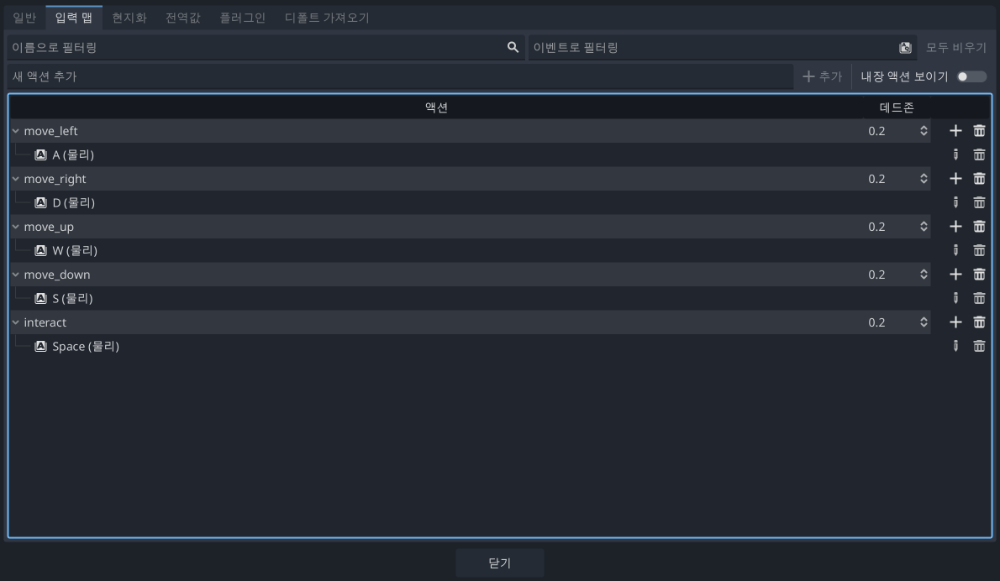

수업 에셋 다운로드
에셋 받는 방법
아래 링크에서 수업에 필요한 에셋(zip)를 다운로드하고 프로젝트 폴더에 압축을 풀어주세요.
다운로드 :
Click Here!
`assets.zip`을 다운로드 후 압축 해제 해 주세요.
문제가 있으면 강사에게 알려주세요.
Godot 프로젝트 셋팅 가이드
1. 화면 및 렌더링 설정
프로젝트 > 프로젝트 셋팅 > 일반
우측 상단
고급 설정(Advanced Settings)
ON
좌측 카테고리: 표시(Display) > 창(Window)
뷰포트 너비:
320
, 높이:
240
늘리기(Stretch)
모드(Mode):
viewport
렌더링(Rendering) > 텍스처(Textures)
디폴트 텍스처 필터:
Nearest
Godot 프로젝트 셋팅 가이드
2. 입력 맵(Input Map) 설정
상단 탭
[입력 맵]
선택
새 액션 추가:
move_left
입력 후 [추가]
새로 생긴 아이템 우측
[+]
버튼 클릭
A 키
입력 후 확인 (Key A)
WASD 모두 추가
move_right (D), move_up (W), move_down (S)

Page
1
/ 3
이전
다음